전기공사산업기사 (2018-09-15 기출문제)
1과목: 전기응용
1. 온도의 변화로 인한 궤조의 신축에 대응하기 위한 것은?
- 궤간
- 곡선
- 유간
- 확도
(정답률: 64%)

2. 평균 수평광도는 200[cd], 구면 확산률이 0.8일 때 구광원의 전광속은 약 몇 [lm]인가?
- 2,009
- 2,060
- 2,260
- 3,060
(정답률: 66%)
3. 용해, 용접, 담금질, 가열 등에 가장 적합한 가열방식은?
- 복사가열
- 유도가열
- 저항가열
- 유전가열
(정답률: 68%)
4. 3상 반파정류회로에서 변압기의 2차 상전압 220[V]를 SCR로써 제어각 α=60°로 위상제어할 때 약 몇 [V]의 직류전압을 얻을 수 있는가?
- 108.7
- 118.7
- 128.7
- 138.7
(정답률: 55%)
5. 복사속의 단위로 옳은 것은?
- sr
- W
- lm
- cd
(정답률: 67%)
6. 생산공정이나 기계장치 등에 이용하는 자동제어의 필요성이 아닌 것은?
- 노동 조건의 향상
- 제품의 생산속도를 증가
- 제품의 품질향상, 균일화, 불량품 감소
- 생산설비에 일정한 힘을 가하므로 수명감소
(정답률: 83%)
7. 물체의 위치, 방향, 및 자세 등의 기계적 변위를 제어량으로 해서 목표 값의 임의의 변화에 추종하도록 구성된 제어계는?
- 자동조정
- 서보기구
- 프로세스제어
- 프로그램제어
(정답률: 76%)
8. 서로 관계 깊은 것들끼리 짝지은 것이다. 틀린 것은?
- 유도가열 : 와전류손
- 표면가열 : 표피효과
- 형광등 : 스토크스정리
- 열전온도계 : 톰슨효과
(정답률: 78%)
9. 광속 계산의 일반식 중에서 직선광원(원통)에서의 광속을 구하는 식은 어느 것인가? (단, I0는 최대광도, I90은 θ = 90° 방향의 광도이다.)
- πI0
- π2I90
- 4πI0
- 4πI90
(정답률: 61%)
10. 직접 조명의 장점이 아닌 것은?
- 설비비가 저렴하여 설계가 단순하다.
- 그늘이 생기므로 물체의 식별이 입체적이다.
- 조명률이 크므로 소비전력은 간접조명의 1/2~1/3이다.
- 등기구의 사용을 최소화하여 조명효과를 얻을 수 있다.
(정답률: 54%)
11. 20[℃]의 물 5ℓ를 용기에 넣어 1[kW]의 전열기로 가열하여 90[℃]로 하는데 40분 걸렸다. 이 전열기의 효율은 약 몇 [%]인가?
- 46
- 51
- 56
- 61
(정답률: 53%)
12. 고주파 유전가열에서 피열물의 단위 체적당 소비전력[W/cm3]은? (단, E[V/cm]는 고주파 전계, δ는 유전체 손실각, f는 주파수, εs는 비유전율이다.)
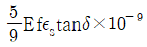
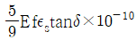
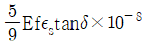
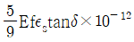
(정답률: 76%)
13. 아래에서 금속의 이온화 경향이 가장 큰 것은?
- Ag
- Pb
- Na
- Sn
(정답률: 77%)
14. 유도전동기를 기동하여 가속도 ωs에 이르기까지 회전자에서의 발열손실 Q(J)를 나타낸 식은? (단, J는 관성모멘트이다.)
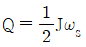
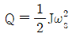
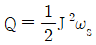
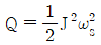
(정답률: 76%)
15. 1,000 [lm]인 광속을 발산하는 전등 10개를 500[m2]방에 점등하였다. 평균조도는 약 몇 [lx]인가? (단, 조명률은 0.5이고 감광보상률이 1.5이다.)
- 1.67
- 2.52
- 6.67
- 60
(정답률: 76%)
16. 플라즈마 용접의 특징이 아닌 것은?
- 비드(bead)폭이 좁고 용입이 깊다.
- 용접속도가 빠르고 균일한 용접이 된다.
- 가스의 보호가 충분하여, 토치의 구조가 간단하다.
- 플라즈마 아크의 에너지 밀도가 커서 안정도가 커서 안정도가 높다.
(정답률: 64%)
17. SCR 각 단자에 접속되는 전압극성이 옳게 표기된 것은?
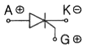
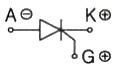
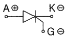
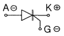
(정답률: 81%)
18. 기동토크가 가장 큰 단상 유도전동기는?
- 반발 기동전동기
- 분상 기동전동기
- 콘덴서 기동전동기
- 세이딩코일형 전동기
(정답률: 87%)
19. 우리나라 전기철도에 주로 사용하는 집전장치는?
- 뷔겔
- 집전슈
- 트롤리봉
- 팬터그래프
(정답률: 67%)
20. 망간 건전지에 대한 설명으로 틀린 것은?(문제 오류로 가답안 발표시 4번으로 발표되었지만 확정답안 발표시 모두 정답처리 되었습니다. 여기서는 가답안인 4번을 누르면 정답 처리 됩니다.)
- 1차 전지이다.
- 공칭전압이 1.5[V]이다.
- 음극으로 아연이 사용된다.
- 양극으로 이산화망간이 사용된다.
(정답률: 81%)
2과목: 전력공학
21. 루프(환상) 배전방식의 장점은?
- 농촌에 적당하다.
- 전압변동이 적다.
- 증설이 용이하다.
- 전선비가 적게 든다.
(정답률: 36%)
22. 전력계통에서 인터록(interlock)의 설명으로 적합한 것은?
- 차단기와 단로기는 각각 열리고 닫힌다.
- 차단기가 열려 있어야만 단로기를 닫을 수 있다.
- 차단기가 닫혀 있어야만 단로기를 닫을 수 있다.
- 차단기의 접점과 단로기의 접점이 동시에 투입될 수 있다.
(정답률: 48%)
23. 유효낙차 400[m]의 수력발전소에서 펠턴수차의 노즐에서 분출하는 물의 속도를 이론값의 0.95배로 한다면 물의 분출속도는 약 몇 [m/s]인가?
- 42.3
- 59.5
- 62.6
- 84.1
(정답률: 25%)
24. 단상 2선식 110[V] 저압배전선로를 단상 3선식 110/220[V]로 변경할 때 부하의 크기 및 공급전압을 일정하게 하고 또 부하를 평형시켰을 때 전선로의 전압강하율은 변경 전에 비하여 어떻게 되는가?
- 1/2
- 1/3
- 1/4
- 1/5
(정답률: 28%)
25. 수력발전소의 저수지 용량 등을 결정하는 데 사용되는 것으로 가장 적합한 것은?
- 유량도
- 유황곡선
- 수위 유랑곡선
- 적산 유랑곡선
(정답률: 44%)
26. 중성점 직접접지 방식의 특징 중 틀린 것은?
- 과도안정도가 좋다.
- 변압기의 단절연이 가능하다.
- 절연레벨을 저하시킬 수 있다.
- 정격전압이 낮은 피뢰기를 사용할 수 있다.
(정답률: 38%)
27. 3상 3선식 1회선의 가공 송전선로에서 D를 등가 선간거리, r을 반지름이라고 하면 1선당 작용 정전용량은?
- D/r 에 비례한다.
- D/r 에 반비례한다.
- log D/r 에 비례한다.
- logD/r 에 반비례한다.
(정답률: 46%)
28. 가공 전선로의 전선 진동을 방지하기 위한 방법으로 틀린 것은?
- 경동선을 ACSR로 교환
- 아멀로드(Armour Rod)로 전선 보강
- 토쇼널 댐퍼(Torsional Damper)의 설치
- 스톡 브리지 댐퍼(Stock Bridge Damper)의 설치
(정답률: 49%)
29. 전력케이블의 고장점 탐색방법 중 휘스톤브리지의 평형상태를 이용하여 고장점을 측정하는 방법은?
- 수색 코일법
- 펄스 측정법
- 머레이 루프법
- 정전용량 측정법
(정답률: 49%)
30. 단상 2선식 배전선의 전선 총량을 100[%]라 할 때 3상 3선식과 단상 3선식의 전선의 총량은 각각 몇 [%]인가? (단, 선간전압, 공급전력, 전력손실 및 배전거리는 같으며, 중성선의 굵기는 외선과 같다고 한다.)
- 3상 3선식 : 37.5[%], 단상 3선식 : 75[%]
- 3상 3선식 : 50[%], 단상 3선식 : 75[%]
- 3상 3선식 : 75[%], 단상 3선식 : 37.5[%]
- 3상 3선식 : 100[%], 단상 3선식 : 37.5[%]
(정답률: 37%)
31. 옥내 저압배선에서 전선의 굵기를 결정하는 주요 요인이 아닌 것은?
- 허용전류
- 단락전류
- 전압강하
- 기계적강도
(정답률: 39%)
32. 송배전 선로에 사용하는 직렬 콘덴서에 대한 설명으로 옳은 것은?
- 최대 송전전력이 감소하고 정태 안정도가 감소된다.
- 부하의 변동에 따른 수전단의 전압변동률은 증대된다.
- 선로의 유도 리액턴스를 보상하고 전압강하를 감소시킨다.
- 송·수 양단의 전달 임피던스가 증가하고 안정극한전력이 감소한다.
(정답률: 49%)
33. 그림과 같이 지선을 설치하여 전주에 가해지는 수평장력 600[kg]을 지지하고 있다. 지선으로 4[mm]의 철선을 사용하면 철선은 최소 몇 가닥이 필요한가? (단, 이철선의 허용하중은 440[kg], 안전율은 2.5이다.)
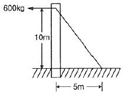
- 6
- 7
- 8
- 9
(정답률: 28%)
34. 전력선과 통신선과의 상호 인덕턴스에 의하여 발생되는 유도장해는?
- 정전 유도장해
- 전자 유도장해
- 고조파 유도장해
- 전자파 유도장해
(정답률: 44%)
35. 200[V], 10[kVA]인 3상 유도전동기가 있다. 어느 날의 부하 실적은 1일의 사용전력량이 72[kWh], 1일의 최대전력이 9[kW], 최대부하일 때의 전류가 35[A]이었다. 1일의 부하율과 최대 공급전력일 때의 역률은 약 몇 [%]인가?
- 부하율 : 31.3, 역률 : 74.2
- 부하율 : 31.3, 역률 : 82.5
- 부하율 : 33.3, 역률 : 74.2
- 부하율 : 33.3, 역률 : 82.5
(정답률: 30%)
36. 전력용 조상설비 중 무효전력 흡수를 진상과 지상양용으로 할 수 있는 것은?
- 동기조상기
- 분로리액터
- 직렬리액터
- 전력용콘덴서
(정답률: 51%)
37. 지중선로는 가공선로와 비교하여 인덕턴스와 정전용량이 어떠한가?
- 인덕턴스, 정전용량이 모두 크다.
- 인덕턴스, 정전용량이 모두 작다.
- 인덕턴스는 크고, 정전용량은 작다.
- 인덕턴스는 작고, 정전용량은 크다.
(정답률: 44%)
38. 154[kV] 송전선로의 철탑에 90[kA]의 직격전류가 흐를 때 역섬락을 일으키지 않을 탑각 접지저항으로 적합한 것은? (단, 154[kV]의 송전선에서 1련의 애자수는 9개를 사용하였고, 이 때 애자의 섬락전압은 860[kV]이다.)
- 9
- 14
- 17
- 21
(정답률: 26%)
39. 소호리액터를 송전계통에 사용하면 리액터의 인덕턴스와 선로의 정전용량이 어떤 상태가 되어 지락전류를 소멸시키는가?
- 병렬 공진
- 직렬 공진
- 고 임피던스
- 저 임피던스
(정답률: 33%)
40. 페란티 효과의 발생 원인은?
- 선로의 저항
- 선로의 정전용량
- 선로의 인덕턴스
- 선로의 누설컨덕턴스
(정답률: 50%)
3과목: 전기기기
41. 직류에서 교류로 변환하는 기기는?
- 쵸퍼
- 인버터
- 회전 변류기
- 사이클로 컨버터
(정답률: 54%)
42. 동기발전기의 부하 포화곡선에 대한 설명 중 옳은 것은?
- 무부하시의 유기기전력과 계자전류의 관계를 나타낸 곡선
- 발전기를 정격속도로 운전하여 일정 역률, 일정 부하를 인가할 때 단자전압과 계자전류의 관계를 나타낸 곡선
- 중성점을 제외한 전 단자를 단락하고 정격속도로 운전하여 계자전류를 0에서부터 서서히 증가시키는 경우 단락전류와 계자전류의 관계를 나타낸 곡선
- 발전기를 정격속도로 운전하고 지정된 정격전류에서 정격전압이 되도록 계자전류를 조정한 후 계자전류를 그대로 유지하면서 단자전압과 부하전류의 관계를 나타낸 곡선
(정답률: 21%)
43. 직류전동기 중 부하가 변하면 속도가 심하게 변하는 전동기는?
- 직류 분권전동기
- 직류 직권전동기
- 차동 복권전동기
- 가동 복권전동기
(정답률: 51%)
44. 병렬운전을 하고 있는 두 대의 3상 동기 발전기 사이에 무효 순환전류가 흐르는 경우는?
- 부하의 증가
- 부하의 감소
- 원동기 출력의 감소
- 기전력 크기의 변화
(정답률: 48%)
45. 용량 P[kVA]인 동일 정격의 단상변압기 4대로 낼 수 있는 3상 최대출력용량은?
- 3P
- √3 P
- 2√3 P
- 3√3 P
(정답률: 44%)
46. 무부하 전동기는 역률이 낮지만 부하가 증가하면 역률이 커지는 이유는?
- 전류 증가
- 효율 증가
- 전압 감소
- 2차 저항 증가
(정답률: 34%)
47. 동기발전기의 돌발 단락전류를 제한하는 것은?
- 권선저항
- 누설리액턴스
- 역상리액턴스
- 동기리액턴스
(정답률: 43%)
48. 3상 유도전동기의 2차 저항을 m배로 하면 동일하게 m배로 되는 것은?
- 역률
- 전류
- 슬립
- 토크
(정답률: 41%)
49. 자기용량 10[kVA]의 단권변압기를 그림과 같이 접속하였을 때 부하역률이 80[%]라면 부하에 몇 [kW]의 전력을 공급할 수 있는가?
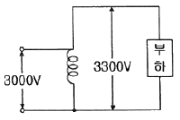
- 55
- 66
- 77
- 88
(정답률: 29%)
50. 단상 지권 정류자전동기에 전기자 권선의 권수를 계자 권수에 비해 많게 하는 이유가 아닌 것은?
- 역률 저하를 방지하기 위하여
- 속도 기전력을 크게 하기 위하여
- 변압기 기전력을 크게 하기 위하여
- 주자속을 작게 하고 토크를 증가시키기 위하여
(정답률: 25%)
51. 실리콘제어정류기의 게이트 전류에 관한 설명으로 옳은 것은?
- 게이트 전류를 증가시키면 순방향 차단 전압은 감소한다.
- 게이트의 전류를 증가시키면 순방향 차단 전압은 변함없다.
- 게이트 전류를 감소시키면 브레이크 오버 전압은 감소한다.
- 게이트 전류를 감소시키면 브레이크 오버 전압은 변함없다.
(정답률: 29%)
52. 4극 3상 유도전동기를 60[Hz]의 전원에 접속하여 운전하고 있다. 회전자의 주파수가 3[Hz]일 때의 회전자 속도[rpm]는?
- 1,700
- 1,710
- 1,720
- 1,730
(정답률: 42%)
53. 유도전도기로 직류발전기를 회전시킬 때, 직류발전기의 부하를 증가시키면 유도전동기의 속도는?
- 증가한다.
- 감소한다.
- 변함없다.
- 동기속도 이상으로 회전한다.
(정답률: 32%)
54. 직류기의 전기자 반작용에 대한 설명이 옳은 것은?
- 전기자 반작용을 방지하기 위해 보상권선의 전류 방향을 전기자 전류의 방향과 동일하게 한다.
- 전기자 반작용이란 전기자 전류에 의한 자속이 계자자속에 영향을 미쳐 공극에서의 자속분포가 변하는 현상을 말한다.
- 전기자 반작용을 방지하기 위해 전동기의 경우 브러시를 새로운 중성점으로 회전방향과 같은 방향으로 이동시켜야 한다.
- 전기자 반작용을 방지하기 위해 발전기의 경우 브러시를 새로운 중성점으로 회전 방향과 반대 방향으로 이동시켜야 한다.
(정답률: 36%)
55. 변압기 여자전류에 가장 많이 포함되어 있으며, 3상결선에서 계통의 과전압과 통신선로에 간섭을 일으키는 고조파는?
- 제2고조파
- 제3고조파
- 제4고조파
- 제5고조파
(정답률: 40%)
56. 3상 동기발전기에 평형 3상정류가 흐를 때 전기자반작용은 이 전류가 기전력에 대하여 ( A ) 때 감자작용이 되고 ( B )때 증자작용이 된다. A, B의 적당한 것은?
- A : 90°뒤질, B : 동상일
- A : 90°뒤질, B : 90°앞설
- A : 90°앞설, B : 90°뒤질
- A : 동상일, B : 90°뒤질
(정답률: 47%)
57. 직류기의 효율이 최대가 되는 경우는?
- 고정손 = 부하손
- 전부하동손 =철손
- 기계손 = 전기자동손
- 와류손 = 히스테리시스손
(정답률: 40%)
58. 변압기 절연물의 열화 정도를 파악하는 방법이 아닌 것은?
- 유전정접시험
- 절연내력시험
- 절연저항측정시험
- 권선저항측정시험
(정답률: 26%)
59. △결선 변압기의 1대가 고장으로 제거되어 V결선으로 할 때 공급할 수 있는 전력은 고장 전 전력의 몇 [%]인가?
- 57.7
- 66.7
- 75.0
- 81.6
(정답률: 50%)
60. 4국 60[Hz]의 정류자 주파수 변환기가 1,440 [rpm]으로 회전할 때의 주파수는 몇 [Hz]인가?
- 8
- 10
- 12
- 15
(정답률: 47%)
4과목: 회로이론
61. 대칭 3상 전압을 그림과 같은 평형 부하에 가할 때 부하의 역률은 약 얼마인가? (단, R=12[Ω], 1/ωC = 4[Ω]이다.)
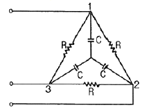
- 0.6
- 0.7
- 0.8
- 0.9
(정답률: 17%)
62. 전달함수에 대한 설명으로 틀린 것은?
- 전달함수가 s가 될 때 적분요소라 한다.
- 전달함수는 출력 라플라스변환 / 입력 라플라스변환 으로 정의 된다.
- 어떤 계의 전달함수의 분모를 0으로 놓으면 이것이 곧 특성방정식이 된다.
- 어떤 계의 전달함수는 그 계에 대한 임펄스 응답의 라플라스 변환과 같다.
(정답률: 39%)
63. RL직렬회로에 직류전압을 가했을 때 흐르는 전류가 정상전류 I=E/R 의 70[%]에 도달하는데 걸리는 시간은? (단, τ는 시정수이다.)
- t = 0.7τ
- t = 1.1τ
- t = 1.2τ
- t = 1.4τ
(정답률: 23%)
64. f(t) = 10[u(t-3)-u(t-5)]를 라플라스 변환하면 어떻게 되는가?
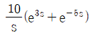
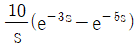
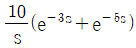
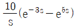
(정답률: 39%)
65.
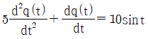
에서 모든 초기 조건을 0으로 하고 라플라스 변환하면 어떻게 되는가? (단, Q(s)는 q(t)의 라플라스 변환이다.)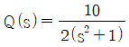
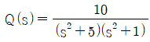
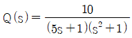
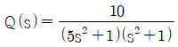
(정답률: 30%)
66. 대칭 3상 Y부하에서 각상의 임피던스가 3+j4[Ω]이고 부하전류가 20[A]일 때 이 부하에서 소비되는 유효전력[W]은?
- 1,400
- 1,600
- 1,800
- 3,600
(정답률: 33%)
67. 다음의 회로에서 입력 임피던스 Z의 실수부가 R/2이 되려면 1/ωC은? (단, 각주파수는 ω[rad/s]이다.)
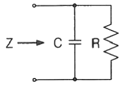
- R
- Rω
- 1/R
- ω/R
(정답률: 22%)
68. i =2+5sin(100t+30°)+10sin(200t-10°)(A)와 파형은 동일하나 기본파의 위상이 20°늦은 비정현파 전류[A]의 순시값을 나타내는 식은?
- 2+5sin(100t+10°)+10sin(200t-30°)
- 2+5sin(100t+10°)+10sin(200t+30°)
- 2+5sin(100t+10°)+10sin(200t+50°)
- 2+5sin(100t+10°)+10sin(200t-50°)
(정답률: 21%)
69. 비접지 3상 Y부하의 각 선에 흐르는 비대칭 각 선전류를 Ia, Ib, Ic라 할 때 선전류의 영상분 I0는?
- 0
- Ia + Ib
- Ia + Ib + Ic
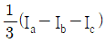
(정답률: 39%)
70. 정현파 사이클의 수학적인 평균값은?
- 0
- 0.637×최대값
- 0.707×최대값
- 1.414×실효값
(정답률: 30%)
71. 그림과 같은 회로망에서 전류를 산출하는데 옳게 표시한 식은?
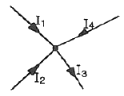
- I1 + I2 - I4 - I3 = 0
- I1 + I4 - I2 - I3 = 0
- I1 + I2 + I3 + I4 = 0
- I1 + I2 - I3 + I4 = 0
(정답률: 47%)
72. 직류 과도현상의 저항 R[Ω]과 인덕턴스 L[H]의 직렬회로에 대한 설명으로 틀린 것은?
- 회로의 시정수는
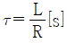
이다. - 과도기간에 있어서의 인덕턴스 L의 단자전압은
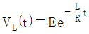
이다. - 과도기간에 있어서의 저항 R의 단자전압은
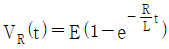
이다. - t = 0에서 직류전압 E[V]를 가했을 때 t(s)후의 전류는
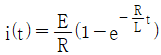
[A]이다.
(정답률: 32%)
73. 어떤 회로에서
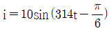
[A]의 전류가 흐른다. 이를 복소수로 표시하면?- 3.54 – j6.12[A]
- 5 – j17.32[A]
- 6.12 – j3.54[A]
- 17.32 – j5[A]
(정답률: 35%)
74. 그림과 같은 이상적인 변압기로 구성된 4단자 회로에서 4단자 정수 A와 C는 어떻게 되는가?
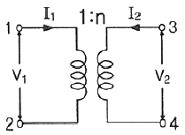
- A = n, C = 0
- A = 0, C = n
- A = 0, C = 1/n
- A = 1/n, C = 0
(정답률: 28%)
75. Va=3[V], Vb=2-j3[V], Vc = 4+j3[V]를 3상 불평형 전압이라고 할 때 영상전압[V]은?
- 0
- 3
- 9
- 27
(정답률: 31%)
76. 어떤 회로의 단자전압이 V = 100sinωt + 40sin2ωt + 30sin(3ωt+60°)(V) 이고 전압강하의 방향으로 흐르는 전류가 I= 10sin(ωt-60°)+2sin(3ωt+1⑤°)[A]일 때 회로에 공급되는 평균전력[W]은?
- 271.2
- 371.2
- 530.2
- 630.2
(정답률: 19%)
77. 그림과 같이 주파수 f[Hz]인 교류회로에서 전류 I와 IR이 같은 값으로 되는 조건은? (단, R은 저항[Ω], C는 정전용량[F], L은 인덕턴스[H]이다.)
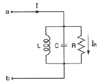
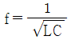
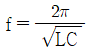
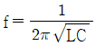
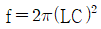
(정답률: 49%)
78. 2개의 전력계로 평형 3상 부하의 전력을 측정하였더니 한쪽의 지시치가 다른 쪽 전력계의 지시치보다 3배이었다면 부하역률은 약 얼마인가?
- 0.37
- 0.57
- 0.76
- 0.86
(정답률: 31%)
79. 다음의 회로가 정 저항 회로가 되기 위한 L[H]의 값은?
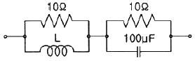
- 1
- 0.1
- 0.01
- 0.001
(정답률: 39%)
80. 다음과 같은 전기회로의 입력을 ei, 출력을 eo라고 할 때 전달함수는? (단, T = L/R 이다.)
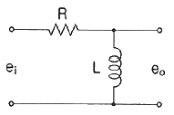
- Ts + 1
- Ts2 + 1
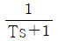
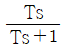
(정답률: 28%)
5과목: 전기설비
81. 기계기구 및 전선을 보호하기 위하여 과전류차단기를 전로 중에 시설할 수 있는 곳은?
- 접지공사의 접지선
- 다선식 전로의 중성선
- 저압 옥내배선의 전원선
- 전로의 일부에 접지공사를 한 저압 가공전선로의 접지측 전선
(정답률: 40%)
82. 저고압 가공전선이 철도를 횡단하는 경우 레일면상 높이는 몇 [m]이상이어야 하는가?
- 4
- 5
- 5.5
- 6.5
(정답률: 44%)
83. 고압용의 개폐기·차단기·피뢰기 기타 이와 유사한 기구로서 동작 시에 아크가 생기는 것은 가연성 물체로부터 몇 [m]이상 이격하여야 하는가?
- 0.5
- 1
- 1.5
- 2
(정답률: 31%)
84. 제1종 접지공사의 접지저항 값은 몇 [Ω] 이하로 유지하여야 하는가?
- 10
- 20
- 30
- 50
(정답률: 43%)
85. 고압 옥상 전선로의 전선이 다른 시설물과 접근하거나 교차하는 경우에는 고압 옥상 전선로의 전선과 이들 사이의 이격거리는 몇 [cm] 이상이어야 하는가?
- 30
- 40
- 50
- 60
(정답률: 26%)
86. 전력 보안통신 설비인 무선통신용 안테나 또는 반사판을 지지하는 철주·철근콘크리트주 또는 철탑의 기초의 안전율은 얼마 이상이어야 하는가?
- 1.2
- 1.3
- 1.5
- 2.2
(정답률: 42%)
87. 22.9[kV]특고압 가공전선과 그 지지물·완금류·지주 또는 지선 사이의 이격거리는 몇 [cm] 이상이어야 하는가?
- 15
- 20
- 25
- 30
(정답률: 27%)
88. 저압 가공인입선에 사용할 수 없는 전선은?
- 나전선
- 케이블
- 절연전선
- 다심형 전선
(정답률: 42%)
89. 최대 사용전압이 154[kV]인 중성점 직접 접지식 전로의 절연내력 시험전압은 약 몇 [kV]인가?
- 110.88
- 141.68
- 169.40
- 192.50
(정답률: 31%)
90. 저압 옥내간선에서 분기하여 차단기를 설치하는 경우 분기점으로부터 차단기의 설치 거리는 원칙적으로 몇 [m] 이하인가?
- 3
- 4
- 5
- 6
(정답률: 35%)
91. 급경사지에 시설하는 전선로의 시설에 대한 설명으로 틀린 것은?
- 전선의 지지점간 거리는 15[m]이하로 한다.
- 전선에 사람이 접촉할 우려가 있는 곳에 시설하는 경우에는 적당한 방호장치를 시설한다.
- 저압과 고압 전선로를 같은 벼랑에 시설하는 경우에는 저압 전선로를 고압 전선로 위에 시설한다.
- 전선은 케이블인 경우 이외에는 벼랑에 견고하게 붙인 금속제 완금류에 절연성·난연성 및 내수성의 애자로 지지한다.
(정답률: 41%)
92. 154[kV] 가공전선로를 시가지에 시설하는 경우 특고압 가공전선에 지락 또는 단락이 생기면 몇 초 이내에 자동적으로 이를 전로로부터 차단하는 장치를 시설하는가?
- 1
- 2
- 3
- 5
(정답률: 32%)
93. 유희용 전차의 시설방법으로 틀린 것은?
- 유희용 전차에 전기를 공급하는 전로에는 전용 개폐기를 시설할 것
- 유희용 전차에 전기를 공급하기 위하여 사용하는 접촉전선은 제3레일 방식에 의하여 시설할 것
- 유희용 전차에 전기를 공급하는 전로의 사용전압은 직류의 경우에는 60[V]이하, 교류의 경우는 40[V]이하일 것
- 유희용 전차 안에 승압용 변압기를 시설하는 경우 그 변압기의 2차 전압은 300[V]이하일 것
(정답률: 26%)
94. 전격살충기는 전격격자가 지표상 또는 마루 위 몇 [m] 이상 되도록 설치하여야 하는가?
- 1.5
- 2.5
- 3.5
- 4.5
(정답률: 28%)
95. 발전소에서 계측장치를 시설하지 않아도 되는 것은?
- 특고압용 변압기의 온도
- 특고압용 변압기유 절연내력
- 발전기의 베어링 및 고정자 온도
- 발전기의 전압 및 전류 또는 전력
(정답률: 34%)
96. 중앙급전 전원과 구분되는 것으로서 전력소비지역 부근에 분산하여 배치 가능한 전원을 무엇이라 하는가?
- 임시전력원
- 분산형전원
- 분전반전원
- 계통연계전원
(정답률: 41%)
97. 22.9[kV]의 전압을 변압하는 변전소가 있다. 이 변전소에 울타리를 시설하고자 하는 경우, 울타리의 높이와 울타리로부터 충전부분까지의 거리의 합계는 몇 [m]이상으로 하여야 하는가?
- 4
- 5
- 6
- 8
(정답률: 25%)
98. 직류식 전기철도에서 귀선의 궤도 근접 부분에 1년 간의 평균 전류가 통할 때, 그 구간 안의 어느 2점 사이에서의 전위차는 몇 [V]이하이어야 하는가?
- 2
- 6
- 10
- 15
(정답률: 16%)
99. 가로등, 경기장, 공장, 아파트 단지 등의 일반조명을 위하여 시설하는 고압방전들은 그 효율이 몇 [lm/W] 이상의 것이어야 하는가?
- 60
- 70
- 80
- 90
(정답률: 36%)
100. 진열장 내의 배선으로 사용전압 400[V] 미만에 사용하는 코드 또는 캡타이어 케이블의 최소 단면적은 몇 [mm2]인가?
- 1.25
- 1.0
- 0.75
- 0.5
(정답률: 39%)